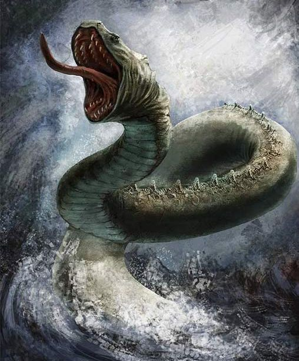
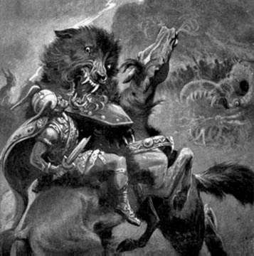

Чудовища

ЙОРМУНГАНД - едно от децата на Локи и великанката Ангрбода.
Чудовищна морска змия (змей), обвиваща с тялото си цялата земя. Наричана е още
Мидгардска змия (змей). Другите деца на Локи и Ангрбода са огромният вълк Фенрир и
Хел - господарката на подземния свят.

ФЕНРИР - чудовищен вълк, дете на Локи и великанката Ангрбода.
Азите успяли с хитрост да го оковат, но във времената на Рагнарок (Залезът на боговете)
той разкъсал веригите и се освободил, след което погълнал слънцето и убил Один. След това
и той загинал.

ХЕЛ - чудовище, олицетворяващо смъртта. Дете на Локи и
великанката Ангрбода. Господарка на подземния свят, изобразявана като жена,
която от кръста надолу е скелет.
ГАРМ - кучето (вълкът) на Хел, пазач на подземния свят.
Имал четири очи. Във времената на Рагнарок (Залезът на боговете) убил Тир и е убит от него.